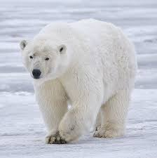

หมีขาว ถือได้ว่าเป็นสัตว์กินเนื้อบนพื้นดินที่มีขนาดใหญ่เป็นอันดับที่ 2 รองจากหมีกริซลี ที่พบในทวีปอเมริกาเหนือ ตัวผู้เต็มวัยอาจสูงได้ถึง 3 เมตร น้ำหนักตัวอาจมากได้ถึง 350–680 กิโลกรัม (770–1,500 ปอนด์) อายุขัยโดยเฉลี่ย 30 ปี หมีขาวมีรูปร่างที่แตกต่างจากหมีชนิดอื่น ๆ ที่เห็นได้ชัดเจน คือ มีส่วนคอที่ยาวกว่า ขณะที่ใบหูก็มีขนาดเล็ก อุ้งเท้ามีขนาดใหญ่ และที่เป็นจุดเด่นเห็นได้ชัด คือ สีขนที่เป็นสีขาวครีมอมเหลืองอ่อน ๆ อันเป็นที่มาของชื่อเรียก เนื่องจากผลของเกลือในน้ำทะเล ซึ่งขนสีครีมนี้ทำให้พรางตัวให้กลมกลืนกับสภาพแวดล้อมที่เต็มไปด้วยหิมะและน้ำแข็งได้เป็นอย่างดี